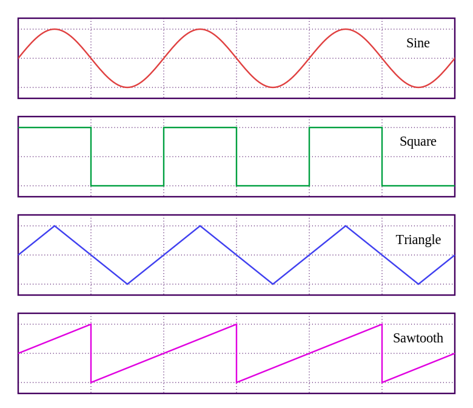

There are all sorts of strands of creativity that contributed to what we now call electronic music. Even
in the
19th century, Italian futurists
were experimenting with electronically produced sounds. In the 1940's, magnetic audio tape became to be
used
(abused?) by modifying speed of recording of playback, reversing
the tape, and cutting it together from found sounds. In the 1950's the first instances of
algorithmically
produced sounds - those generated by a computer program, first appeared.
"I was never worried that synthesizers would replace musicians. First of all, you have to be a musician
in order to make music with a synthesizer."
Robert Moog - Founder of Moog Musical Instruments
Types of Modern Electronic Music
Electronic music these days is created using a variety of techniques. One useful distinction is between
analog and digitally produced music.
Analog Music
Analog Music is created by by electronic components (detailed below), that modify, amplify, and
filter
electronic
oscillations that produce the common basis of auditory information.
Digital Music
Digital Music is often created by microprocessors simulating the components of analog music
production
inside of a computer. These computers run software
(a DAW) that is designed for the design, sequencing, and arranging of electronic music.
Components of Electronic Music Sound
The following is a list of some of the components that make up electronic music:
Oscillators
Oscillators provide a variety of waveforms. Waveforms are patterns of electronic signal that can
be
made
audible.

A list of the basic waveforms used in music production. From
https://commons.wikimedia.org/wiki/File:Waveforms.svg
Filters
Filters remove portions of the waveform generated by an oscillator, changing the tone, or shape
of
the
waveform.
Voltage Controlled Amplifier (VCA)
An amplifier for a signal that varies it's gain depending on a control source.